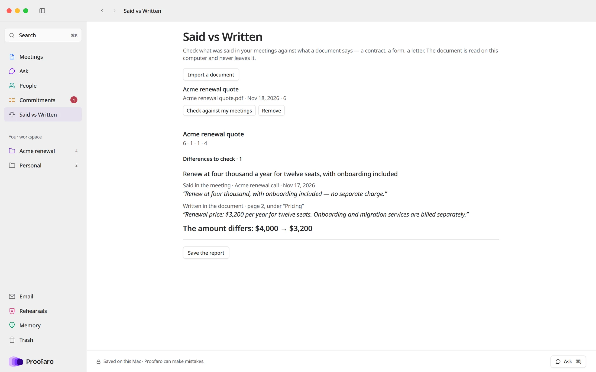

Said vs Written
What was said vs. what got written
The expensive mistakes hide in the gap between the conversation and the paperwork: a number that changed, a promise that quietly became a charge, a deadline that moved. Proofaro compares the documents that follow a meeting against the meeting record itself — and shows you the difference with the original words as evidence.

A concrete example
On a renewal call, the client agrees $4,000 with onboarding included. The quote that arrives says $3,200 — and onboarding billed separately. Nothing about the document looks wrong on its own. It only becomes visible when it is checked against what was actually said. That check runs as soon as you bring Proofaro a quote, contract, proposal or follow-up draft.
How the check works
- Bring the document. Import the file, or let Proofaro check drafts before they go out.
- Compared on your computer. Numbers, dates, prices and promises in the document are checked against the words in your meeting record — locally, like everything in Proofaro. It works fully offline after a one-time setup download.
- Flagged with evidence. Each difference is shown next to the exact words that were spoken, so you can verify it in seconds instead of re-listening to a call.
- A draft, ready. When Proofaro catches a change on an incoming document, it files the catch in your morning queue with a response draft prepared — never sent without your approval.
It also watches the follow-through
The same record powers Proofaro's Commitments Ledger: every promise from every meeting, tracked against later meetings and documents, so a changed commitment is caught even when no single document announces it.
Try Proofaro free during early access
Proofaro is invite-only while we onboard the first users in small waves. Request an invite and we will write to you at the address you give us.
Request Invite →